Amazon Fintech Notification Design
From anxious platform monitoring to confident action - redesigning notifications for thousands of users across Amazon's trillion-dollar fintech ecosystem.
Role
Summary and Impact
I worked as a UX Design Intern on an internal financial automation platform for manual journal entries, designing notification experiences used by accounting and finance teams across Amazon. As the design intern on a team processing trillions in transactions, I collaborated closely with PMs, engineers, and finance users.
- Designed notification workflows projected to save approximately 500K hours annually.
- Creating a filtering framework that replaced fragmented search patterns across intenal fintech tools.
- Established a notification framework approved as a shared standard for 200+ Amazon fintech tools.
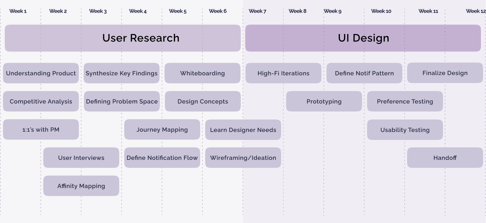
The Problem
Automated entries. Uncertain users.
This internal financial platform automated manual bookkeeping, but users still wondered: “Did my entry go through? Do something need my attention? Do I need to take action?”
The November 2024 customer satisfaction survey revealed this gap: users weren't sure what had happened to their entries, so they kept checking.
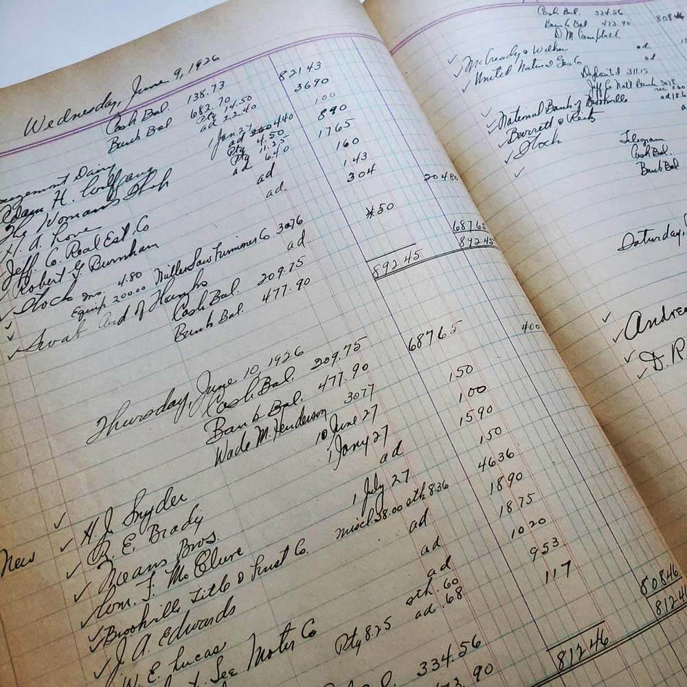
User Research
Understanding why users kept checking
I reviewed existing interviews and spoke with PMs and engineers to understand the notification gaps. Then, I conducted targeted interviews and grouped the insights into four recurring challenges.
Critical alerts were missing
“We don't even get emails when a journal entry fails to be created or posted. There's no notification at all.”
Users tracked work manually
“Many of us maintain a separate document listing all the use cases we're responsible for and manually check them off as we process each entry.”
Navigation required too many clicks
“It only takes 5 mins but the number of clicks I have to make wastes time.”
Updates lacked information context
“If it doesn't call out the period I wouldn't know if it is related to current month or previous month or subsequent month.”
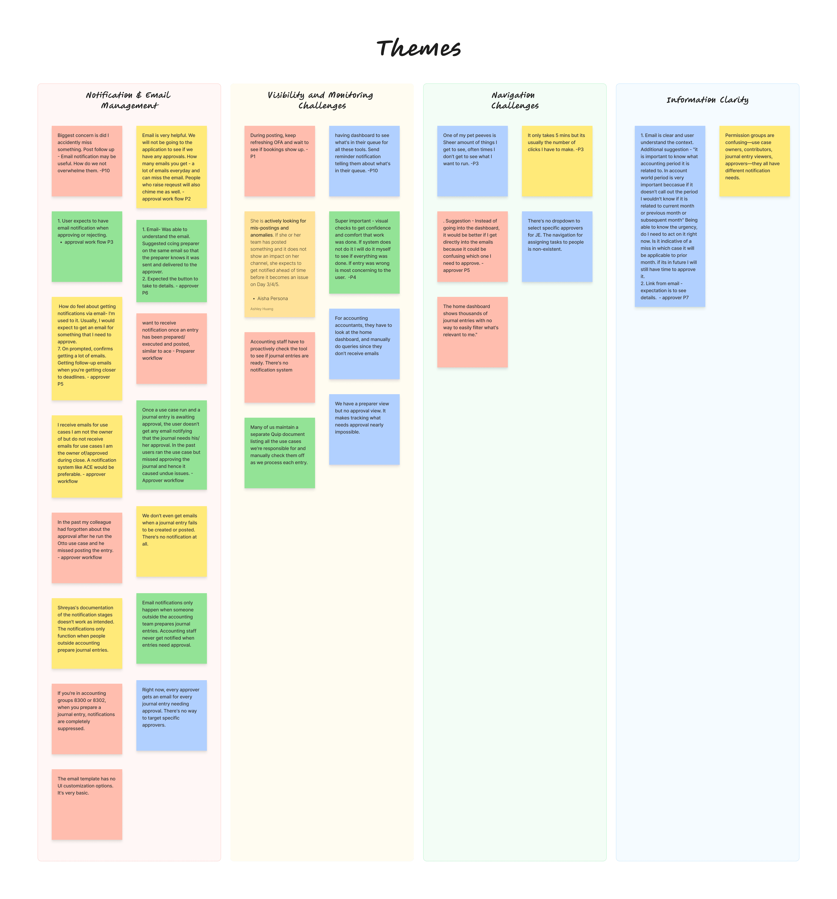
Problem Statement
Keep users informed, not overwhelmed
During month-end close, users managed 20+ workflows within five days, with multiple roles. Missing an action could delay others, but sending more notifications risked overwhelming them.
How might we keep our users informed during high pressure cycles without creating notification fatigue?
Journey Mapping
From system statuses to meaningful updates
The existing statuses described technical steps like upload and file validation. Some accountants (journal-entry preparers, approvers, managers) weren't sure what those statuses meant for their work.
Existing system statuses
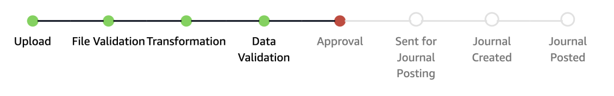
I worked with an accounting manager to define statuses that reflected accountants' workflows, then mapped when preparers and approvers needed notifications.
Preparer notification flow

Approver notification flow

Design Direction
Not every update needed immediate attention
Mapping through each stage of the workflow helped me identify a clear pattern: users need two distinct types of notifications:
Event-Driven Updates
Failures, rejections, and pending approvals needed prompt attention.
- Send immediately
- Required: users can't opt out
- Help prevent unresolved actions from blocking other teams
Bulked Status Updates
Updates kept users informed without requiring immediate action.
- Delivered at the user's preferred frequency
- Optional: users can opt out
- Good to know -> not urgent
Channel Exploration
Choosing where updates should reach users
I explored browser alerts, Slack, and an in-app notification center to see how each could support urgent actions and status updates.
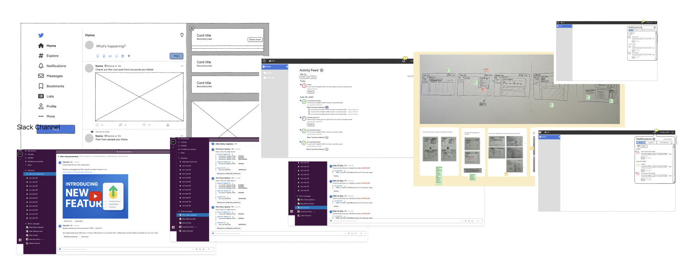
Browser alerts were easy to miss or dismiss and offered limited context. Slack made outstanding actions difficult to track, though it could support announcements.
The Turning Point
Another feed meant more monitoring
As I developed the in-app concept, I realized it duplicated information already available in task pages and dashboards. Adding an activity feed—and read/unread states would give users another inbox to manage.
Design Direction
Meet users where they already work
I chose email because it was already part of users' daily workflows and mental workflows. It could deliver urgent alerts with the context and direct links needed to act, without requiring another place to check.
Event-Driven Email
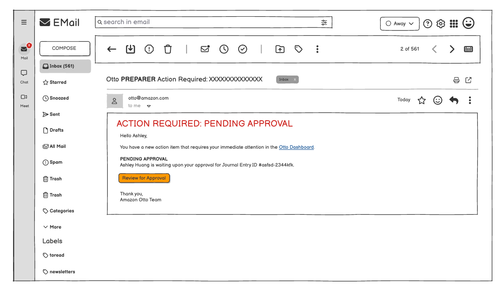
Status Summary Email
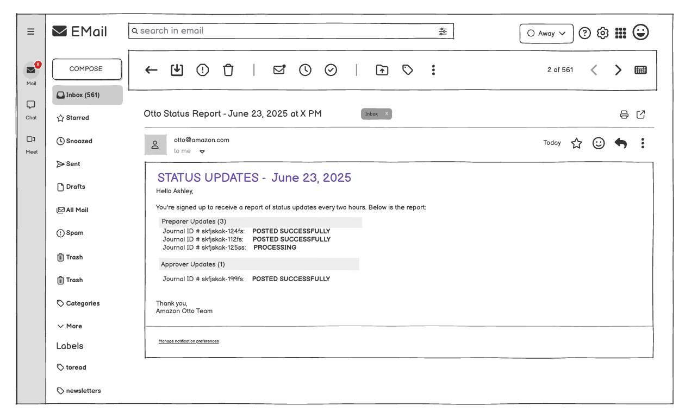
Email Design & Validation
Making updates easier to understand and act on
I iterated on both email types to clarify urgent actions and make multiple status updates easier to scan. For the status summaries, I tested two candidate designs to understand which structure users preferred.
Making the next action clear
Early drafts made the action difficult to find or overemphasized urgency. I refined the hierarchy to bring the message, relevant details, and next step into focus.
Draft 1
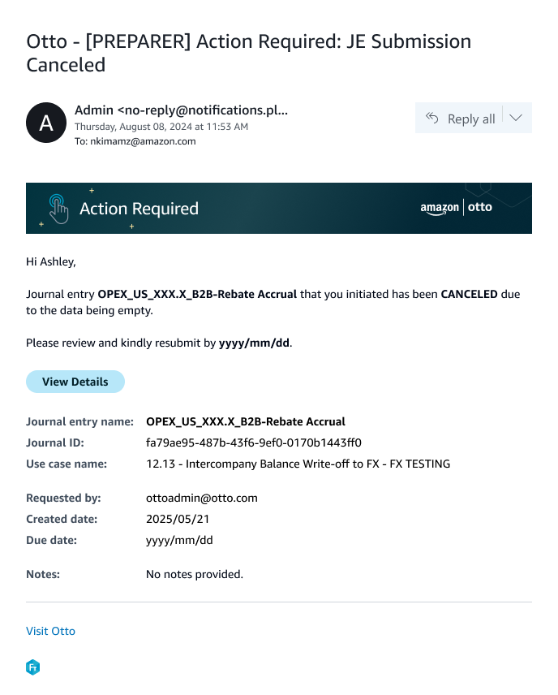
- ✓ Includes entry details
- ✗ Text-heavy and hard to scan
- ✗ Required action gets buried
Draft 2
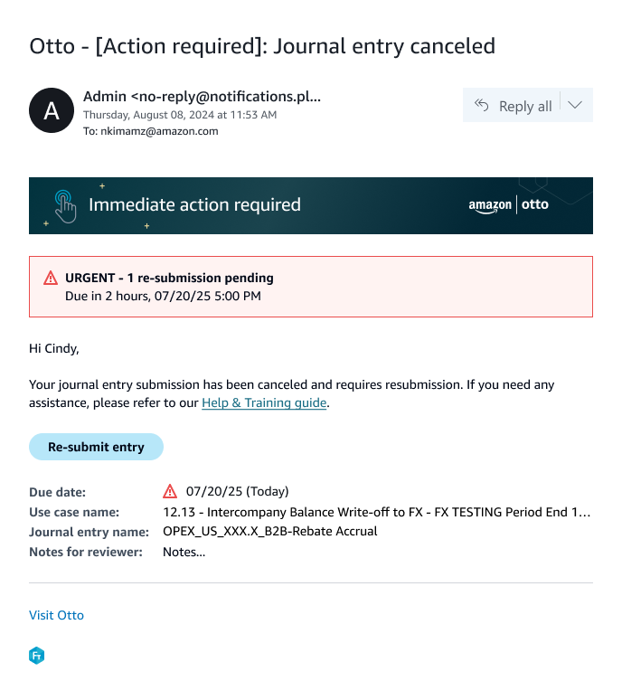
- ✓ Urgency stands out
- ✗ Redundant alert banners
- ✗ Red background raises accessibility concerns
Final design
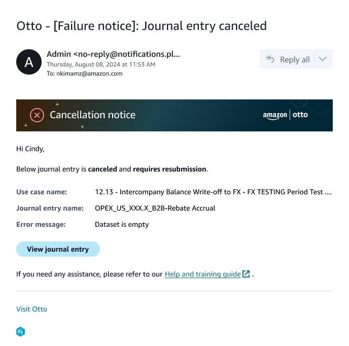
- ✓ Clear message hierarchy
- ✓ Relevant details grouped together
- ✓ Direct link to the task
Finding the right structure for multiple updates
The initial summaries separated updates by role but were difficult to scan. I explored ways to show workflow progress more clearly for users managing multiple responsibilities.
Draft 1
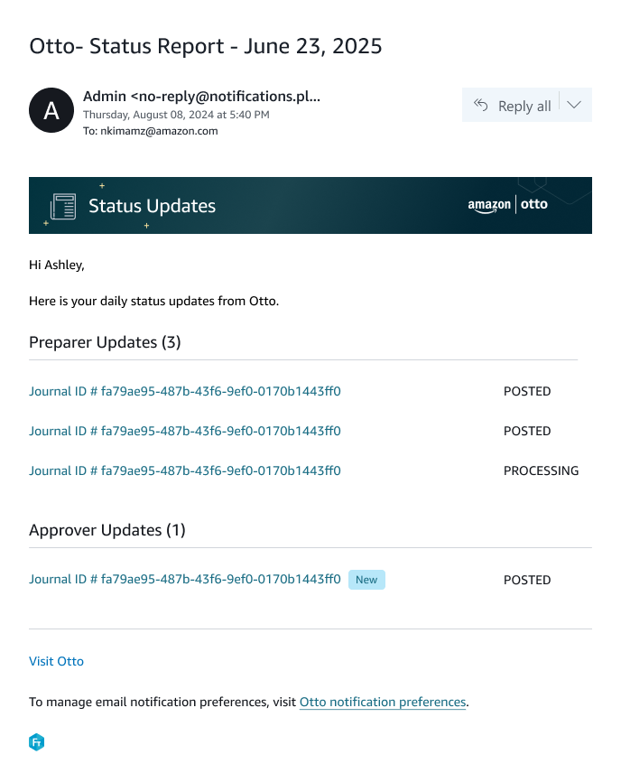
- ✓ Separates updates by role
- ✗ Forces users to scan separate workflows
- ✗ Limited visual hierarchy
Draft 2
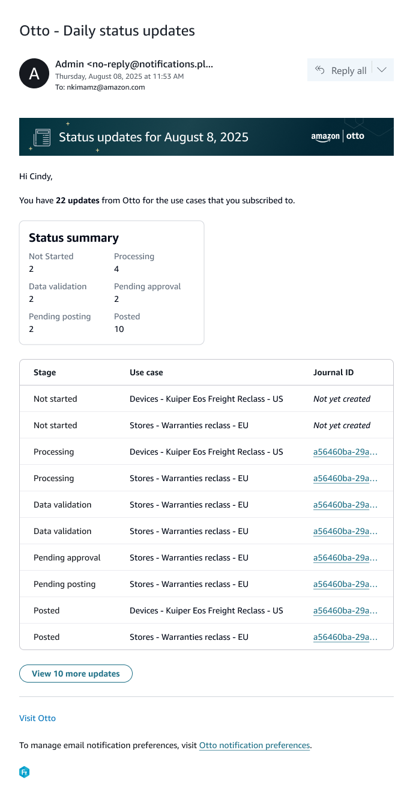
- ✓ Adds a summary and structured table
- ✗ Statuses are hard to distinguish
- ✗ Dense information is difficult to scan
Comparing new iterations
I developed two alternatives: grouping updates by status or showing the most recent changes.
Version 1 - Grouped by status
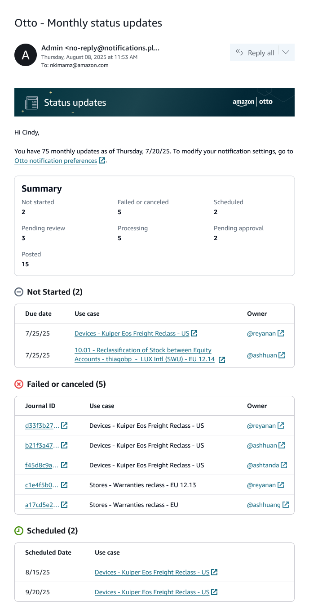
- ✓ Groups entries by workflow status
- ✓ Supports an overview of pending work
- ✗ Recent changes aren't the main focus
Version 2 - Most recent updates
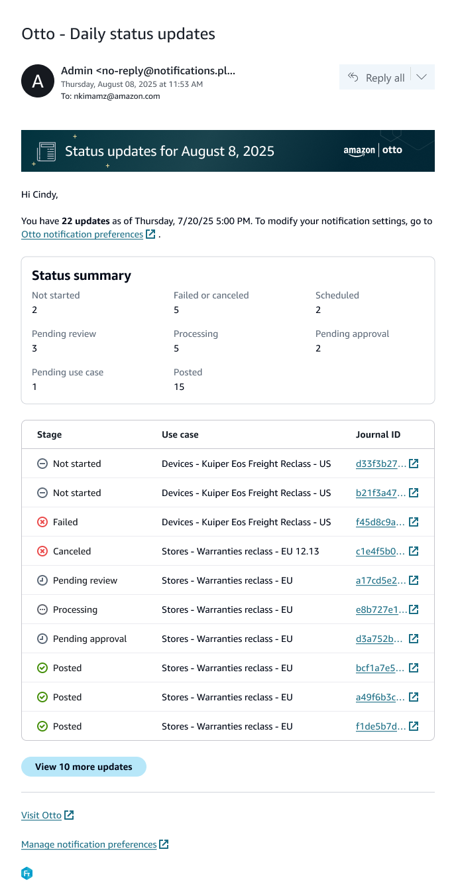
- ✓ Highlights what changed recently
- ✓ Combines updates across statuses
- ✗ Related statuses are spread across the list
Testing which structure worked better
I compared both versions with 15 participants using side-by-side preference questions and clarity ratings.
60% preferred Version 1, the status-organized version.
83% of managers preferred Version 1, the status-organized version.
Average clarity rating: 4.2/5 for Version 1, compared with 3.8/5 for Version 2.
The results supported grouping updates by status, particularly for managers who needed an overview of workflow progress.
Notification Settings
Relevant updates, on users’ terms
I explored ways to help users choose relevant updates and set their delivery schedule. These drafts revealed opportunities to reduce extra clicks, simplify subscription management, and make email timing clearer.
Exploration V1 - Separate tabs and individual subscriptions
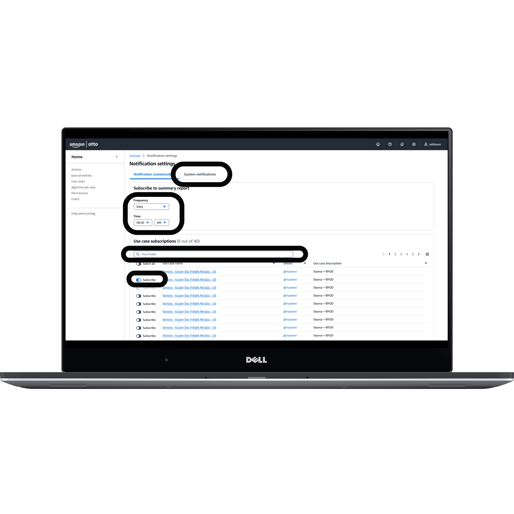
- ✗ Tabs added clicks and didn’t match how users grouped notifications.
- ✗ Per-case toggles required managing subscriptions individually.
- ✗ Frequency options didn’t show when emails would arrive.
Exploration V2 - Bulk selection and detailed scheduling
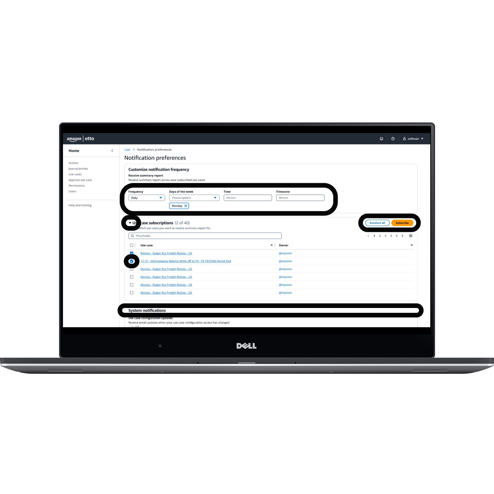
- ✓ Checkboxes supported selecting multiple cases.
- ✗ A collapsible section could hide subscription controls.
- ✗ Scheduling exposed several fields at once without a clear preview.
Exploration V3 - Compact selection and preset frequencies
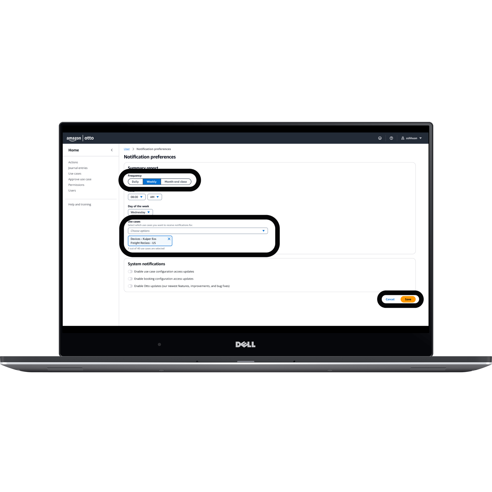
- ✓ Brought notification preferences onto one page.
- ✗ The segmented control could look like a view filter.
- ✗ Choosing cases individually still required manual selection.
Relevant updates with a predictable schedule
I consolidated notification preferences into one page. Users could choose updates by ownership or role, enable the summaries they wanted, and select a schedule with a clear next-email preview.
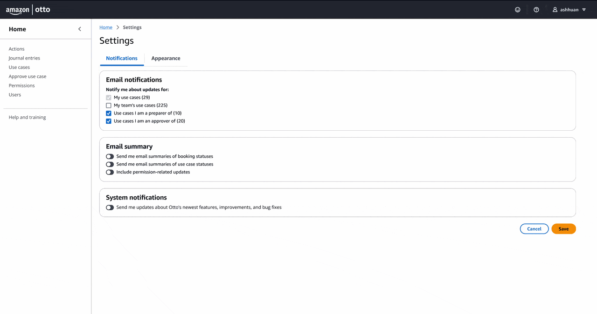
- ✓ Choose relevant updates by ownership or role.
- ✓ Customize delivery days and times when needed.
- ✓ See exactly when the next summary will arrive.
- ✓ Manage workflow and system notifications in one place.
Delivery & Impact
From final designs to a shared standard
I delivered final Figma designs, interaction specifications, email templates for each notification scenario, and implementation documentation. The email designs became official HTML templates and were incorporated into our design system, while the notification experience was handed off for development.
The framework was approved as a shared standard for 200+ Amazon fintech tools. My notification work was projected to save approximately 500K hours annually.
Reflection
My Main Takeaways
User mental models drive great design. The best designs work with how people already think, not against them. Understanding how accountants naturally track responsibilities and deadlines helped me design notification patterns that fit their workflows instead of forcing new mental models.
Ownership transforms ambiguity into progress. When stakeholders shifted or priorities changed, taking initiative to clarify requirements, find new contacts, and expand research kept the project moving instead of waiting for direction.
Design is about balancing trade-offs. Impactful design balances user needs and constraints. I've learned that advocating for users while understanding real-world limitations wroking with engineering and PM teams is what makes design truly impactful.